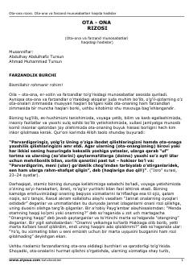

OROta-ona va farzand munosabatlari hamda farzandlik burchlari haqidagi islomiy qo'llanma.
Ushbu risola islom dinida ota-ona va farzand o'rtasidagi munosabatlar, farzandlik burchlari va ota-onani rozi qilishning ahamiyati haqida so'z yuritadi. Kitobda Qur'oni karim oyatlari va hadislar asosida ota-onaga xizmat qilishning turli jihatlari va odoblari bayon etilgan.